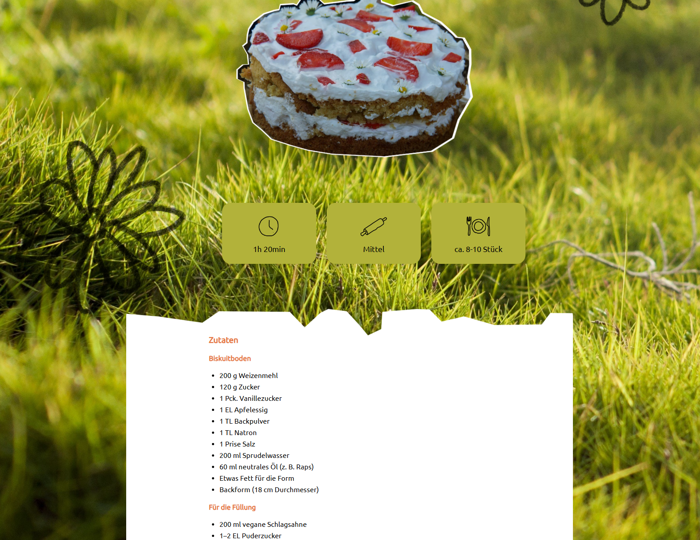

Backwiese ist eine naturinspirierte Website für vegane Backrezepte. Ziel des Projekts war es, eine übersichtliche und ansprechende Rezeptplattform zu gestalten, die den Einstieg ins vegane Backen erleichtert und gleichzeitig eine ruhige, angenehme Nutzererfahrung bietet.
Gestalterisch greift die Website Motive aus der Natur auf, etwa Blumen, Wiesen und organische Formen. Diese Elemente wurden in eine warme, leicht handgemachte Optik übersetzt, die eher an ein digitales Kochbuch als an eine klassische Rezeptdatenbank erinnert. Die Seite soll zum Stöbern, Ausprobieren und Verweilen einladen.

Die Rezeptdetailseite stellt ein einzelnes Rezept in den Mittelpunkt. Ein großes Bild gibt einen ersten Eindruck, darunter folgen Zutatenliste und Zubereitung in klar gegliederter Form.